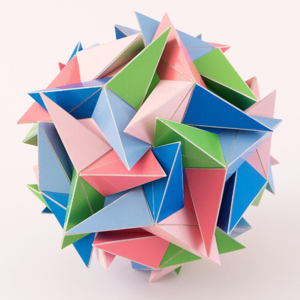
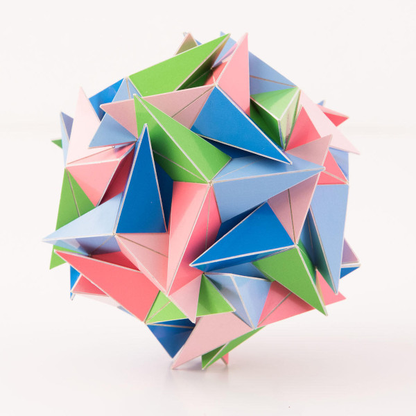

Nemesis - a Hepta Twister with A5 symmetry

Pictures copyright by PhotoArt Studio Hörby
This model was built in September 2019 and its dimensions is around 12 cm x 12 cm x 12 cm.
This polyhedron only consists of regular heptagons that are folded over a diagonal. There are different ways in which you can fold a regular heptagon and for this polyhedron the folding is done in a 'W' shape.
The polyhedron has the same rotational symmetry as an icosahedron, i.e. without the reflections. I like these kind of symmetries where the reflections are missing. It took me some time until a stumbled across a polyhedron with folded regular heptagons with this symmetry that wasn't too complex.
Polyhedra that lack reflections are usually a bit more challenging to build and this was no exception, also because the pieces are close together because of some sharp angles between faces. I tried to build it as is in 2014, but I failed. There was quite some tension in the model and the model had the tendency to collapse. It became difficult to glue on parts while pulling them outwards at the same time.
After that I stopped building for quite some time and I put energy on other things. Finally in 2019 I decided to face my Nemesis and tried again. I knew I couldn't just do the same thing and fall into the same trap so I planned this well: I decided to build this one in two phases First I built one layer and then I added pyramids on top of that layer. That worked out very well and suddenly this model became quite easy to build.
Here is the same model looking into an order three symmetry axis. 
Last Updated
2019-10-12